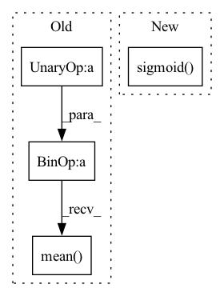

Pattern ID :18311

Before Change
def __init__(self):
pass
def execute(self, output, target):
x = 1 / (1 + jt.exp(-output))
return -(target*jt.log(jt.maximum(x,1e-20))+(1-target)*jt.log(jt.maximum(1-x,1e-20))).mean()
class L1Loss(Module):
def __init__(self):
pass
After Change
self.sigmoid = Sigmoid()
self.bce = BCELoss()
def execute(self, output, target):
output = self.sigmoid(output)
output = self.bce(output, target)
return output
class SGD(object):
In pattern: SUPERPATTERN
Frequency: 3
Non-data size: 4
Instances
Fragment ID: 59978898
Project Name: jittor/jittor
Commit Name: 9b6de1fbd819fa30dc18bd3b3c95544756f6a224
Time: 2020-05-07
Author: 576825820@qq.com
File Name: python/jittor/nn.py
M Class Name: BCEWithLogitsLoss
N Class Name: BCEWithLogitsLoss
M Method Name: execute(3)
N Method Name: execute(3)
M Parent Class: Module
N Parent Class: Module
M File Name: python/jittor/nn.py
N File Name: python/jittor/nn.py
M Start Line: 681
M End Line: 682
N Start Line: 153
N End Line: 155
'>
Before Change
def __init__(self):
pass
def execute(self, output, target):
x = 1 / (1 + jt.exp(-output))
return -(target*jt.log(jt.maximum(x,1e-20))+(1-target)*jt.log(jt.maximum(1-x,1e-20))).mean()
class L1Loss(Module):
def __init__(self):
pass
After Change
self.sigmoid = Sigmoid()
self.bce = BCELoss()
def execute(self, output, target):
output = self.sigmoid(output)
output = self.bce(output, target)
return output
class SGD(object):
'>
Fragment ID: 59978883
Project Name: jittor/jittor
Commit Name: 357952d98ce8844dc8104ce103498c64c3f58b39
Time: 2020-05-07
Author: 576825820@qq.com
File Name: python/jittor/nn.py
M Class Name: BCEWithLogitsLoss
N Class Name: BCEWithLogitsLoss
M Method Name: execute(3)
N Method Name: execute(3)
M Parent Class: Module
N Parent Class: Module
M File Name: python/jittor/nn.py
N File Name: python/jittor/nn.py
M Start Line: 625
M End Line: 626
N Start Line: 153
N End Line: 155
'>
Before Change
pos_pred, neg_pred = predictions[:, 0], predictions[:, 1:]
neg_softmax = (neg_pred - neg_pred.max()).softmax(dim=1)
neg_pred = (neg_pred * neg_softmax).sum(dim=1)
loss = F.softplus(-(pos_pred - neg_pred)).mean()
// ↑ For numerical stability, we use "softplus(-x)" instead of "-log_sigmoid(x)"
return loss
def customize_parameters(self):
After Change
pos_pred, neg_pred = predictions[:, 0], predictions[:, 1:]
neg_softmax = (neg_pred - neg_pred.max()).softmax(dim=1)
loss = -((pos_pred[:, None] - neg_pred).sigmoid() * neg_softmax).sum(dim=1).log().mean()
// neg_pred = (neg_pred * neg_softmax).sum(dim=1)
// loss = F.softplus(-(pos_pred - neg_pred)).mean()
// ↑ For numerical stability, we use "softplus(-x)" instead of "-log_sigmoid(x)"
'>
Fragment ID: 59978935
Project Name: thuwangcy/rechorus
Commit Name: 2922cef450f5eea302fd156d17b52dc20716696d
Time: 2020-11-05
Author: THUwangcy@gmail.com
File Name: src/models/BaseModel.py
M Class Name: BaseModel
N Class Name: BaseModel
M Method Name: loss(2)
N Method Name: loss(2)
M Parent Class: torch.nn.Module
N Parent Class: torch.nn.Module
M File Name: src/models/BaseModel.py
N File Name: src/models/BaseModel.py
M Start Line: 73
M End Line: 83
N Start Line: 75
N End Line: 84